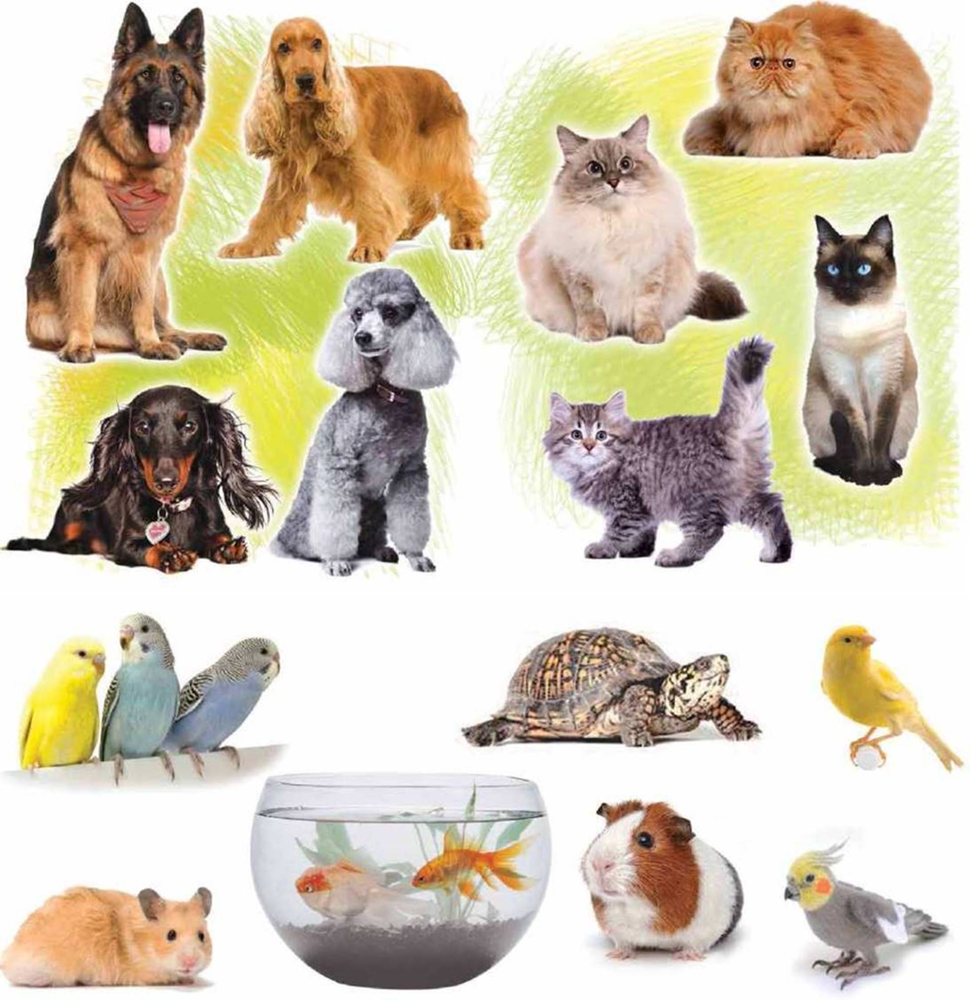

A pet, or companion animal, is an animal kept primarily for a person's company, entertainment or as an act of compassion such as taking in and protecting a stray cat, rather than as a working animal, livestock or laboratory animal. Popular pets are often considered to have attractive appearances, intelligence and relatable personalities, but some pets may be taken in on an altruistic basis and accepted as they are. Two of the most popular pets are dogs and cats. The technical term for a cat lover is an ailurophile, and for a dog lover, a cynophile. Other animals commonly kept include: rabbits; ferrets; pigs; rodents, such as gerbils, hamsters, chinchillas, rats, and guinea pigs; avian pets, such as parrots, passerines and fowls; reptile pets, such as turtles, alligators, crocodiles, lizards, and snakes; aquatic pets, such as fish, freshwater and saltwater snails, amphibians like frogs and salamanders; and arthropod pets, such as tarantulas and hermit crabs. Small pets may be grouped together as pocket pets, while the equine and bovine group include the largest companion animals. Pets provide their owners (or "guardians") both physical and emotional benefits. Walking a dog can provide both the human and the dog with exercise, fresh air and social interaction. Pets can give companionship to people who are living alone or elderly adults who do not have adequate social interaction with other people. There is a medically approved class of therapy animals, mostly dogs or cats, that are brought to visit confined humans, such as children in hospitals or elders in nursing homes. Pet therapy utilizes trained animals and handlers to achieve specific physical, social, cognitive or emotional goals with patients. People most commonly get pets for companionship, to protect a home or property or because of the beauty or attractiveness of the animals.[2] Aside from lack of desire, the most common reasons for not owning a pet are lack of time, lack of suitable housing and lack of ability to care for the pet when traveling. Some scholars, ethicists and animal rights organizations have raised concerns over keeping pets because of the lack of autonomy and objectification of non-human animals.
Keeping animals as pets may be detrimental to their health if certain requirements are not met. An important issue is inappropriate feeding, which may produce clinical effects. The consumption of chocolate or grapes by dogs, for example, may prove fatal. Certain species of houseplants can also prove toxic if consumed by pets. Examples include philodendrons and Easter lilies (which can cause severe kidney damage to cats) and poinsettias, begonia, and aloe vera (which are mildly toxic to dogs). Housepets, particularly dogs and cats in industrialized societies, are also highly susceptible to obesity. Overweight pets have been shown to be at a higher risk of developing diabetes, liver problems, joint pain, kidney failure, and cancer. Lack of exercise and high-caloric diets are considered to be the primary contributors to pet obesity.